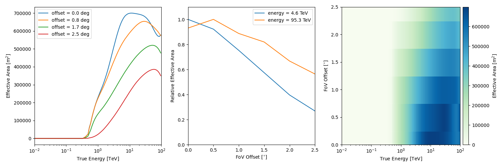
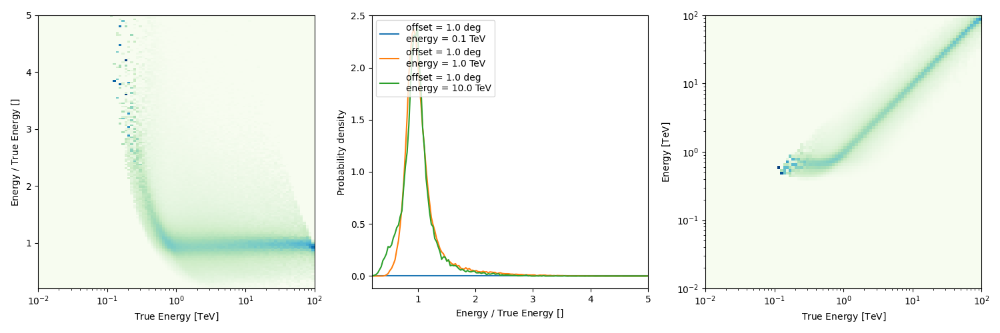
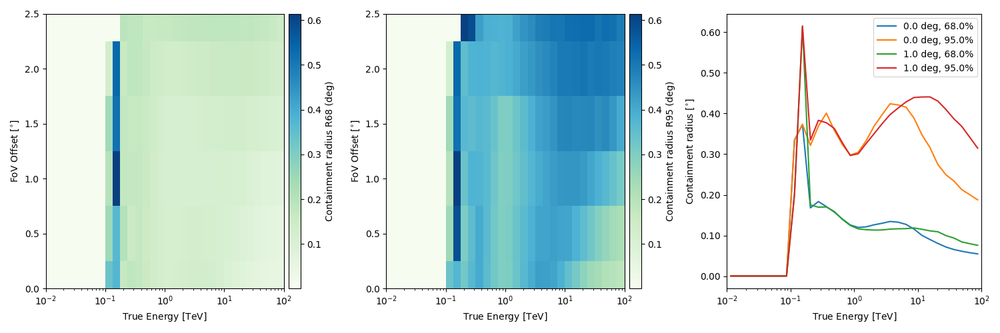

Note
Go to the end to download the full example code or to run this example in your browser via Binder
H.E.S.S. with Gammapy#
Explore H.E.S.S. event lists and IRFs.
H.E.S.S. is an array of gamma-ray telescopes located in Namibia. Gammapy is regularly used and fully supports H.E.S.S. high level data analysis, after export to the current open data level 3 format.
The H.E.S.S. data is private, and H.E.S.S. analysis is mostly documented and discussed at https://hess-confluence.desy.de/ and in H.E.S.S.-internal communication channels. However, in 2018, a small sub-set of archival H.E.S.S. data was publicly released, called the H.E.S.S. DL3 DR1, the data level 3, data release number 1. This dataset is 50 MB in size and is used in many Gammapy analysis tutorials, and can be downloaded via gammapy download.
This notebook is a quick introduction to this specific DR1 release. It briefly describes H.E.S.S. data and instrument responses and show a simple exploration of the data with the creation of theta-squared plot.
H.E.S.S. members can find details on the DL3 FITS production on this Confluence page and access more detailed tutorials in this repository
DL3 DR1#
This is how to access data and IRFs from the H.E.S.S. data level 3, data release 1.
import astropy.units as u
from astropy.coordinates import SkyCoord
import matplotlib.pyplot as plt
from IPython.display import display
from gammapy.data import DataStore
from gammapy.makers import MapDatasetMaker
from gammapy.makers.utils import make_theta_squared_table
from gammapy.maps import Map, MapAxis, WcsGeom
Check setup#
from gammapy.utils.check import check_tutorials_setup
from gammapy.visualization import plot_theta_squared_table
check_tutorials_setup()
System:
python_executable : /home/runner/work/gammapy-docs/gammapy-docs/gammapy/.tox/build_docs/bin/python
python_version : 3.9.16
machine : x86_64
system : Linux
Gammapy package:
version : 1.1.dev561+g829d9e756
path : /home/runner/work/gammapy-docs/gammapy-docs/gammapy/.tox/build_docs/lib/python3.9/site-packages/gammapy
Other packages:
numpy : 1.24.2
scipy : 1.10.1
astropy : 5.2.1
regions : 0.7
click : 8.1.3
yaml : 6.0
IPython : 8.11.0
jupyterlab : not installed
matplotlib : 3.7.1
pandas : not installed
healpy : 1.16.2
iminuit : 2.21.0
sherpa : 4.15.0
naima : 0.10.0
emcee : 3.1.4
corner : 2.2.1
Gammapy environment variables:
GAMMAPY_DATA : /home/runner/work/gammapy-docs/gammapy-docs/gammapy-datasets/dev
A useful way to organize the relevant files are the index tables. The observation index table contains information on each particular run, such as the pointing, or the run ID. The HDU index table has a row per relevant file (i.e., events, effective area, psf…) and contains the path to said file. Together they can be loaded into a Datastore by indicating the directory in which they can be found, in this case “$GAMMAPY_DATA/hess-dl3-dr1”:
Create and get info on the data store
data_store = DataStore.from_dir("$GAMMAPY_DATA/hess-dl3-dr1")
data_store.info()
Data store:
HDU index table:
BASE_DIR: /home/runner/work/gammapy-docs/gammapy-docs/gammapy-datasets/dev/hess-dl3-dr1
Rows: 630
OBS_ID: 20136 -- 47829
HDU_TYPE: ['aeff', 'bkg', 'edisp', 'events', 'gti', 'psf']
HDU_CLASS: ['aeff_2d', 'bkg_3d', 'edisp_2d', 'events', 'gti', 'psf_table']
Observation table:
Observatory name: 'N/A'
Number of observations: 105
Preview an excerpt from the observtaion table
display(data_store.obs_table[:2][["OBS_ID", "DATE-OBS", "RA_PNT", "DEC_PNT", "OBJECT"]])
OBS_ID DATE-OBS RA_PNT DEC_PNT OBJECT
deg deg
------ ---------- -------- ---------- --------
20136 2004-03-26 228.6125 -58.771667 MSH15-52
20137 2004-03-26 228.6125 -59.771667 MSH15-52
Get a single obervation
obs = data_store.obs(23523)
Select and peek events
obs.events.select_offset([0, 2.5] * u.deg).peek()
Peek the effective area
/home/runner/work/gammapy-docs/gammapy-docs/gammapy/.tox/build_docs/lib/python3.9/site-packages/astropy/units/quantity.py:673: RuntimeWarning: invalid value encountered in divide
result = super().__array_ufunc__(function, method, *arrays, **kwargs)
Peek the energy dispersion
Peek the psf
Peek the background rate
plt.figure()
obs.bkg.to_2d().plot()
Theta squared event distribution#
As a quick look plot it can be helpful to plot the quadratic offset (theta squared) distribution of the events.
position = SkyCoord(ra=83.63, dec=22.01, unit="deg", frame="icrs")
theta2_axis = MapAxis.from_bounds(0, 0.2, nbin=20, interp="lin", unit="deg2")
observations = data_store.get_observations([23523, 23526])
theta2_table = make_theta_squared_table(
observations=observations,
position=position,
theta_squared_axis=theta2_axis,
)
plt.figure(figsize=(10, 5))
plot_theta_squared_table(theta2_table)
On-axis equivalent livetime#
Since the acceptance of the H.E.S.S. camera varies within the field of view, what is often interesting is not the simply the total number of hours a source was observed, but the on-axis equivalent number of hours. We calculated the same for the MSH 1552 runs here.
# Get the observations
obs_id = data_store.obs_table["OBS_ID"][data_store.obs_table["OBJECT"] == "MSH 15-5-02"]
observations = data_store.get_observations(obs_id)
print("No. of observations: ", len(observations))
# Define an energy range
energy_min = 100 * u.GeV
energy_max = 10.0 * u.TeV
# define a offset cut
offset_max = 2.5 * u.deg
# define the geom
source_pos = SkyCoord(228.32, -59.08, unit="deg")
energy_axis_true = MapAxis.from_energy_bounds(
energy_min, energy_max, nbin=1, name="energy_true"
)
geom = WcsGeom.create(
skydir=source_pos,
binsz=0.02,
width=(6, 6),
frame="icrs",
proj="CAR",
axes=[energy_axis_true],
)
# compute
livetime = Map.from_geom(geom, unit=u.hr)
for obs in observations:
geom_obs = geom.cutout(
position=obs.get_pointing_icrs(obs.tmid), width=2.0 * offset_max
)
exposure = MapDatasetMaker.make_exposure(geom=geom_obs, observation=obs)
on_axis = obs.aeff.evaluate(
offset=0.0 * u.deg, energy_true=geom.axes["energy_true"].center
)
on_axis = on_axis.reshape((on_axis.shape[0], 1, 1))
lv_obs = exposure / on_axis
livetime.stack(lv_obs)
# Plot
plt.figure()
ax = livetime.plot(add_cbar=True)
# Add the pointing position on top
for obs in observations:
ax.plot(
obs.get_pointing_icrs(obs.tmid).to_pixel(wcs=ax.wcs)[0],
obs.get_pointing_icrs(obs.tmid).to_pixel(wcs=ax.wcs)[1],
"+",
color="black",
)
plt.show()
No. of observations: 17
Exercises#
Find the
OBS_IDfor the runs of the Crab nebulaCompute the expected number of background events in the whole RoI for
OBS_ID=23523in the 1 TeV to 3 TeV energy band, from the background IRF.
Next steps#
Now you know how to access and work with H.E.S.S. data. All other tutorials and documentation apply to H.E.S.S. and CTA or any other IACT that provides DL3 data and IRFs in the standard format.
Total running time of the script: ( 0 minutes 12.978 seconds)